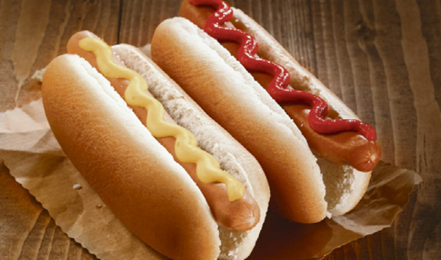
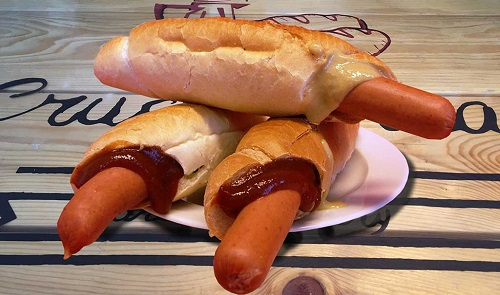
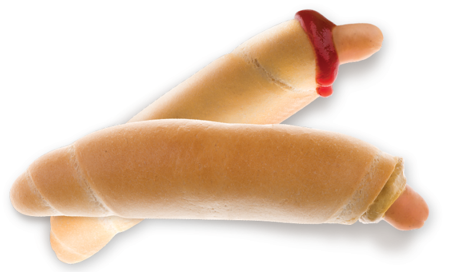

Popis
Párek v rohlíku patří k jídlům, které se často prodávají ve stáncích s občerstvením.
Velice snadno si ale můžete tuto pochoutku připravit i doma. Je to jedno z rychlých jídel, které spolehlivě zasytí.
Má několik alternativ, ze kterých si představíme párek v rohlíku s kečupem a s hořčicí.



Příprava
Suroviny
- rohlík
- párek
- hořčice nebo kečup
Postup
- odřízneme patku rohlíku
- nožem vyhloubíme do rohlíku otvor
- nožem nebo prstem vydlabeme vnitřek rohlíku tak, aby se do něj vešel párek
- párek vložíme do vody a dáme na sporák
- ve chvíli, kdy se voda začne vařit, to vypneme a párek vyndáme
- do otvoru v rohlíku nalijeme trochu hořčice nebo kečupu
- párek jemně zasuneme do rohlíku
- na špičku párku ještě můžeme kápnout trochu hořčice nebo kečupu
Cena
Uvážíme cenu rohlíku, párku a dochucovadla.
Rohlík stojí okolo 2,- kč, ten spotřebujeme právě jeden.
Větší balení párků stojí okolo 70,- kč a je v něm 16 párků.
Ceny nejlevnějších lahví 500ml hořčice nebo kečupu se pohybují kolem 20,- kč. Spotřebujeme zhruba 15ml.
6,98 kč/ks
Cena za kus je vypočítána pouze s ceny surovin. Nezohledňuje cenu energií a použitého nádobí.